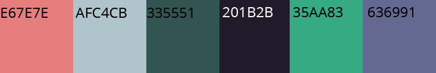

inspiration
En stor del af min inspiration er kommet fra videospillet Undertale som udkom i 2015.
Personlig er jeg rigtig vild med pixelstilen der er brugt. Derfor er det også denne stil jeg har valgt
til
mit spil.
Stilart:
Før at pixelart opstod, kunne man finde det i blandt andet cross-stiching eller mosaik.
Stilen har derfra altid været en
flad stil uden nogen former for 3d effekt. Derfor bryder pixelart stilen med konventionerne for
solid-drawing. Dette
gælder for alle spil-elementer jeg inkluderer.
Generelt har karakterdesigns indenfor pixelart ikke komplekse poseringer, da pixelsne begrænser
mulighederne.
Pixel-art er i moderne tid en computergenereret stil. Det er det der gør at pixelart stadig er relevant
i
moderne tid. Mange er glade for pixel-art da det
er nostalgi fra de første computerspil der kom ud i 1970’erne.
Farver
Der er ikke nogen farver der er direkte knyttet til stilen pixelart. I de helt gamle spil hvor der blev
gjort brug af
pixelart,
ser man at der typisk bliver brugt sort, hvid også en form for neonfarve. Det er stadig meget
populært at gøre brug af disse mættede farver, især hvis man prøver at fremkalde nostalgi.
Brugen af mættede farver i forbindelse med pixelart er et stilistisk valg i for at få formerne og
figurerne til
at poppe, i forhold til begrænsningerne angående pixels. Jeg har tænkt mig at gøre det samme. Min
baggrund
bliver
forholds mørk i modsætning til mine spilelementer som bliver mættede farver for at få dem til at stå
frem.

Typografier
Arcade Classic
Jeg har gjort brug af 3 forskellige typografier. Den første
typografi jeg valgt er
'arcadeclassic'. Denne typografi valgte jeg fordi at det er en pixel typografi, hvilket også er kendetegnet
for de gamle pixel spil. Denne font har jeg kun gjort brug af i min menu.
Pixel font7
Den anden font jeg har valgt er 'pixel font7'. Denne er valgt fordi at
den er næmmere
at læse end 'arcadeclassic', men samtidig er en pixel typografi.
Oswald
Den sidste typografi jeg har brugt er 'oswald'. Denne typografi bliver brugt til
brødtekst. Pixel typografier kan være svær at læse.